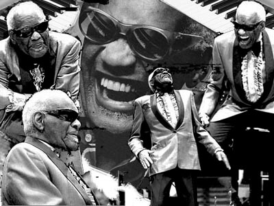

Video
Ray Charles
Living For The City
Ray Charles
Let The Good Time Roll
TRIBUTE TO QUINCY JONES
Ray charles memorial service
Ray Charles and Stevie Wonder:
8 senses for the music
The links between
Stevie Wonder and Ray Charles is not only restricted to being both blind, but a way of looking at life through music. Soul, jazz, gospel ... was a broad spectrum playing with Ray Charles, becoming a cornerstone in the musical education of a little Stevie Wonder listened with admiration to his songs on the radio. His deep voice, rough and full of blues feeling, was the ideal crop to encourage and advance the creative explosion interior of the little Stevie.
Sadly his earthly existence disappeared on June 10, 2004, but their legacy in the form of songs like "Georgia On My Mind", "I Fool For You", "I Got A Woman" and "Hallelujah I Love Her So" never disappear.
There are several occasions where Ray Charles and Stevie Wonder have crossed their existence for over 40 years,the initial disks of little Stevie under their influence or tribute to Ray Charles, the stakes for the good of the planet as "We Are The World", the collaborative album from the Quincy Jones Q's Jook Joint, performing the song "Let the Good Times Roll", or as we see in the video player, a live version of Stevie Wonder and Ray Charles on the issue of Stevie "Living For The City".
A genius has disappeared, a great musician and an idol for Stevie Wonder, but never lose his music full of life and swinging his image in front of the piano, smiling and happy, playing songs from the heart for eternity.


Home |
Biography |
Discography |
Videos |
Songs |
Grammys |
Top ten
steviewonder.es ® is a registered trademark. All content © 2008-2022 by izugarria.
All contents of the site including, images, video, names, trademarks & logos, are property of their respective owners.